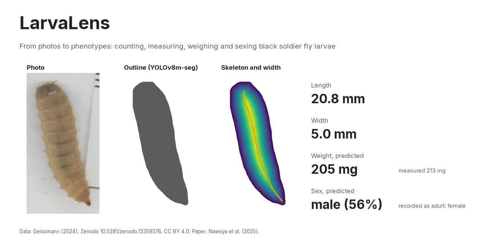
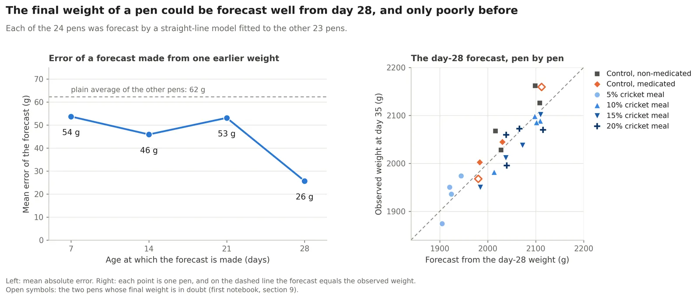

Animal science · Machine learning · Computer vision
Md Raihan Patwary
From feed trials to feature maps.
I am an animal nutrition researcher at Bangladesh Agricultural University. My training happened among broilers, insect larvae and feed samples, and somewhere along the way I fell for data. Now I teach cameras and models to answer farm questions, like how heavy an animal is, without a scale.
Featured work
Three projects
Cattle live weight from photographs
Can ordinary side-view photos replace the scale? Deep learning and classical models compared on Bangladeshi cattle.
Read more →
LarvaLens
Counting, measuring, weighing and sexing black soldier fly larvae from photos.
Read more →
Broilers fed cricket meal
An open broiler trial, checked cell by cell, reanalysed pen by pen, and forecast ahead of slaughter day.
Read more →How I like to work
Data first, model second, fair test always
Every project follows the same five steps. I am honest about where I am strong and where I am still growing.
- Start from a farm questionHow heavy is this animal? How will this pen finish?
- Clean and prepare the dataCheck every number, fix what is wrong, document what is doubtful.Strong zone
- Explore and set a fair testPlot first, then hold out whole animals, pens or batches.
- Choose the right modelCompare simple and deep models and pick the most accurate.Growing zone
- Build the final pipelineTurn the analysis into a clean, reusable tool.Growing zone
Where I am strongest
Data cleaning and preprocessing: auditing messy farm and lab records, finding the errors in them, and getting data ready for a fair analysis.
What I am sharpening now
Selecting the most accurate model with confidence, and building complete, production-ready pipelines. This is what I most want to learn in my next step.
Research outputs
Software, code and work in progress
- SoftwarePatwary MR (2026). LarvaLens: counting, measuring, weighing and sexing black soldier fly larvae with computer vision, v1.0.1. Zenodo. doi:10.5281/zenodo.23325495
- CodePatwary MR (2026). Broiler growth and feed efficiency with dietary cricket meal: audit and reanalysis of an open trial dataset. GitHub
- ManuscriptComparing chemometric and machine learning approaches for predicting yellow mealworm larval weight from proximate composition. In preparation.
- ThesisImage-based live weight estimation of cattle in Bangladesh: a comparison of deep learning and machine learning models. MSc thesis, BAU, in progress.
Selected experience
Lab, field and survey work
- Research Assistant, Department of Animal Nutrition, BAUYellow mealworm larval weight from proximate composition (NST Fellowship), a World Bank-funded omega-3 broiler trial, and omega-3 enrichment of black soldier fly larvae.Dec 2024 – Present
- Questionnaire Surveyor, RationSmart projectUniversity of California, Davis; funded by the Global Methane HubSurveys in five major dairy hub regions of Bangladesh.Jun – Jul 2026
- Intern, Feed Mill Quality Control and Poultry OperationsNahar Agro, ChattogramNIR analysis of feed, ration formulation, day-old chick management.Jun – Sep 2024
Take a break
Lab Rescue
A 30-second game: a very busy researcher, a lot of messy data, and an ML model to the rescue.
Play Lab Rescue